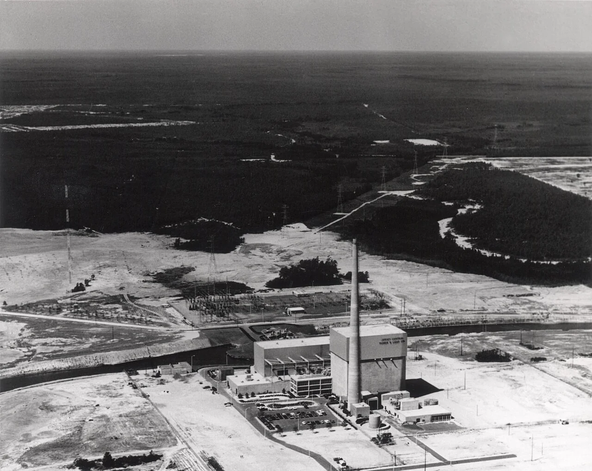
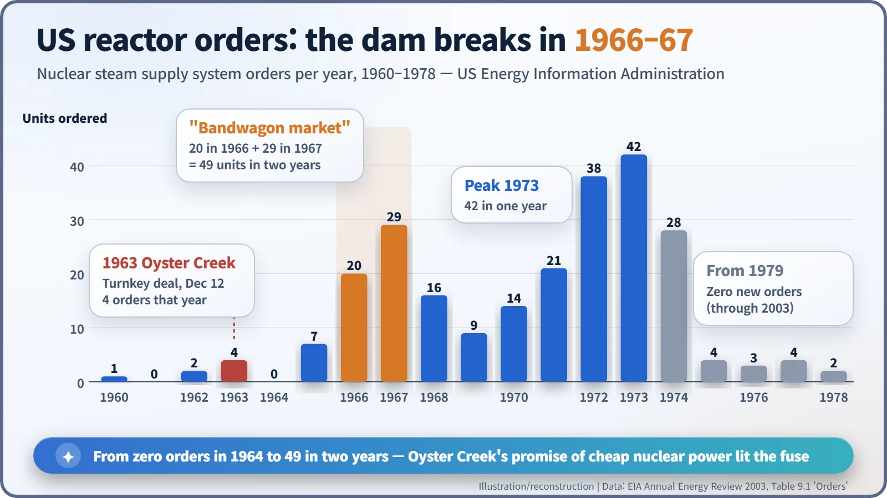
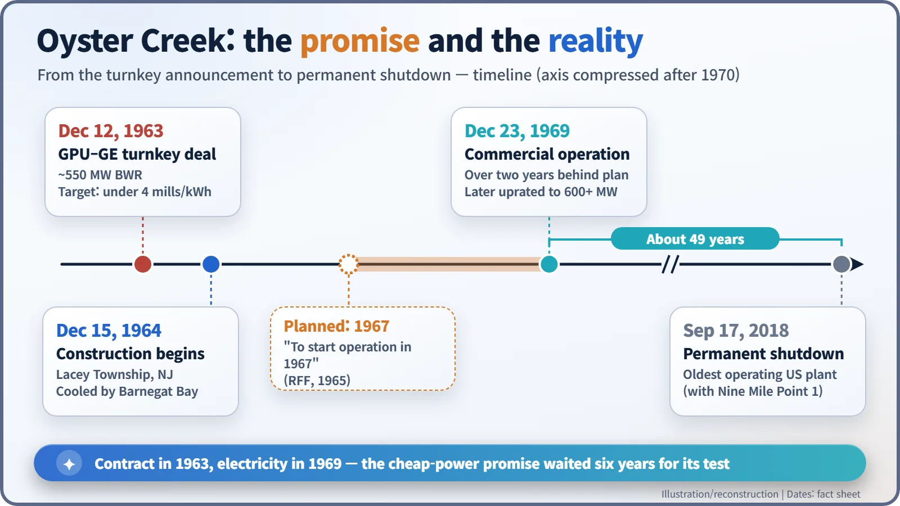
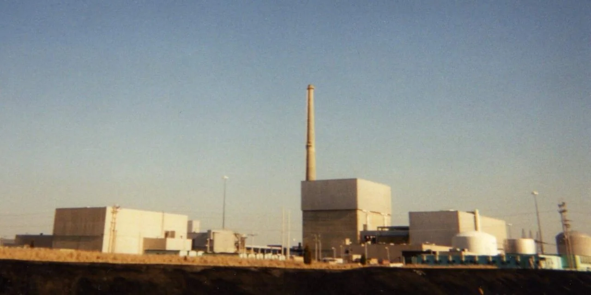

Nuclear History · 198
Buying the Keys Instead of the Coal Trains — Oyster Creek, the Turnkey Deal and Nuclear Power's "Bandwagon Market" (1963)
A fixed price, a target of under 4 mills per kilowatt-hour and a flood of orders: the moment US utilities began choosing nuclear power on the balance sheet.
On 12 December 1963, General Public Utilities announced that General Electric would build the Oyster Creek nuclear plant in New Jersey on fixed-price "turnkey" terms, promising electricity cheap enough to compete with coal. US reactor orders then jumped from zero in 1964 to 49 in 1966–67 — the "bandwagon market" — while the plant itself began commercial operation in December 1969 and ran until 2018.
An offer you could not refuse?
Imagine you run an electric utility in New Jersey in 1963. You need a new power station, and you have two choices. One is a coal-fired plant, fed by trainloads of coal hauled from distant mines. The other is nuclear power, which has still not quite shed its "experimental" label. Up to then, most American nuclear plants had been built with government demonstration support.
Then General Electric (GE) makes you an offer. GE will handle everything from design to construction, will not charge a cent more than the agreed price, and will simply hand you the keys when the plant is finished. On 12 December 1963, General Public Utilities (GPU), parent company of Jersey Central Power & Light, announced that it had accepted such a deal. That was the beginning of the Oyster Creek nuclear plant. [1]
A contract where you just turn the key
"Turnkey" means exactly what it sounds like: the buyer receives a finished facility and only has to turn the key. If construction costs more than planned, the supplier swallows the difference. GE had sold a plant at a fixed price before — Dresden-1 in 1955 — but Oyster Creek was much bigger, initially rated at roughly 550 megawatts (MW). It was a boiling water reactor (BWR), in which water boils inside the reactor itself and the steam drives the turbine. The contract price is recorded differently from source to source, anywhere from $60 million to $76.6 million. [1] [7]
Four mills: the number that took on coal
The number that really turned heads was something else. Jersey Central estimated the plant's lifetime generating cost at under 4 mills per kilowatt-hour. A mill is a thousandth of a dollar, so 4 mills is 0.4 cents. The only question that mattered was "Is it cheaper than coal?" and the company's answer was yes. That is why Oyster Creek is described as the first US nuclear plant ordered on economics alone, without government demonstration subsidies. President Lyndon B. Johnson reportedly welcomed it, saying "it appears that the long promised day of economical nuclear power is close at hand." [1] [2] [5]

Doubters at the time
There were doubters even then. In 1965 the think tank Resources for the Future (RFF) pointed out that Jersey Central's cost of capital was well below average, and that GE may have bid low at a time of stress in the nuclear equipment industry. In 1970 RFF wrote of "price shading by equipment manufacturers anxious to open up a new market." [2] [4]
Later researchers agree that the early turnkey plants were probably built at a loss. Some go further and argue the vendors deliberately took the hit to win follow-on business such as fuel supply — but that remains an interpretation. [1]
Everyone jumps on
A bandwagon is the wagon that carries the band at the head of a parade. Watching people scramble aboard gave the word its second meaning: joining whatever is in fashion.
According to the US Energy Information Administration (EIA), reactor orders were 4 in 1963, zero in 1964 and 7 in 1965. Then they shot up: 20 in 1966 and 29 in 1967 — 49 units in two years. Early in 1967 RFF wrote: "Oyster Creek appears to have been the decisive turning point. Since then orders for nuclear power plants have snowballed." [6] [3]
Westinghouse joined the fixed-price contest, and depending on how they are counted, somewhere from around ten to fourteen plants were sold on turnkey terms. In their 1978 book Light Water, Irvin C. Bupp and Jean-Claude Derian called this period the "Great Bandwagon Market." [8]

The turnkey era lasted only a few years, roughly 1963 to 1966. Cost overruns were quietly absorbed by the vendors. After that, plants were generally built on terms where rising costs fell back on the buyer. The utilities that had jumped on the wagon now carried the bill. [5]
Keys bought in 1963, turned in 1969
Construction at Oyster Creek began on 15 December 1964. Operation had been planned for 1967, but commercial operation did not begin until 23 December 1969. The promise of cheap nuclear power waited six years to be tested in real electricity. [2] [7]

Meanwhile construction costs climbed steeply. One analysis found that for the 75 reactors built between 1966 and 1977, cost overruns averaged 207 percent. [9] Annual US orders peaked at 42 in 1973 and then collapsed; from 1979 to 2003 not a single new reactor was ordered. Of the 259 units ordered from 1953 onward, 124 were cancelled. [6]
Oyster Creek rode out those ups and downs. Uprated to more than 600 MW, it produced electricity for almost 49 years. When it shut down on 17 September 2018 it was, together with Nine Mile Point 1, the oldest operating commercial nuclear plant in the United States. [7]

Nuclear on the same scale as coal
Oyster Creek was neither the world's first nuclear plant nor America's first privately owned one. Its significance lies in the moment nuclear power was weighed on the same scale as coal — chosen not as a government experiment but on a utility's balance sheet. That balance sheet, though, hid some special conditions: a vendor willing to lose money and an unusually low cost of capital. Expectations moved the market; the real costs arrived later, as the bill.